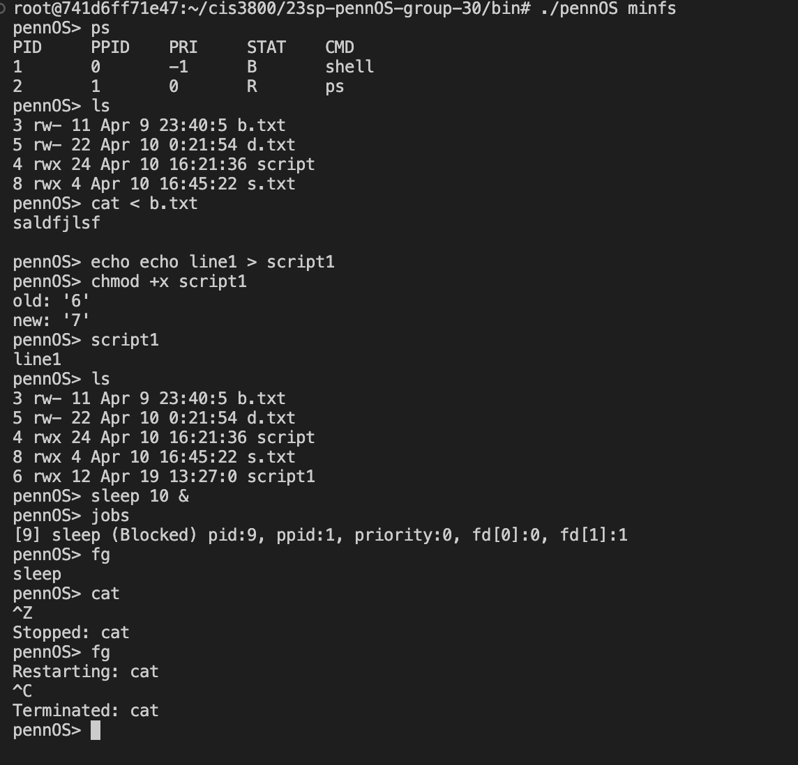

PennOS
PennOS is a Unix-like virtual operating system built on top of the host OS. It runs as a single process on the host OS and provides a shell interface for users to interact with the system. PennOS consists of a kernel that manages process scheduling and context switching, a flat file system (FAT16) that manages I/O operations and file storage, and a user-level shell that supports all basic Unix commands. The system is implemented in C and runs on a Linux host OS.
This is a group project that consists of 4 members. I was responsible for the implementation of FAT file system and file I/O operations. I also implemented the shell commands that interact with the file system.
- Shell: supports all basic UNIX commands including job control, redirection, and I/O
- Flat File System: implements FAT16, stored as a single binary file on host OS
- Kernel: supports priority scheduling and context switching using ucontext
- Provides user-level programming APIs and signal handlings
File System
The file system is implemented as a single binary file on the host OS. It supports CRUD operations for files in a flat directory and read / write / append operations for each file. The file system is implemented as a FAT16 file system.
FAT16 is a simple file system that stores all files in a single directory. It consists of a FAT table and a data region. Each entry in the FAT table is 2 bytes and stores the index of the next block of the file. The data region stores the actual file data. We can calculate the starting address of a file using the first index of a File in the FAT table. A directory file is a special file that stores the matadata of each file in this directory. The starting address of the directory file is stored in the FAT table as the first index.
In our implementation, we first load the FAT table and the directory file into memory. The directory file is loaded as a linked list of File structs. Each File struct is 64 bytes and stores the metadata of a file, including the file name, size, first block index, file type, permission, and last modified time. Then we can perform file operations on the file system by manipulating the linked list and the FAT table.
The file system also supports user-level APIs such as open, read, write, lseek, remove and close. When a user calls open, the file system will search for the file in the directory file and return a file descriptor. The opened file descriptors are stored in a file descriptor table, which is a linked list of FileDescriptor structs. Each FileDescriptor struct stores its fd and file name. When a user calls read, the file system search for file name in the file descriptor table and perform underlying read operations on the file system using directory file and FAT table.
Kernel
Since PennOS is a single process running on the host OS, it needs a kernel to manage process scheduling and context switching. Each process within PennOS is actually a thread, but we will use the term process to refer them.
Priority scheduling is implemented using 3 ready queues. Each process is assigned a priority level from -1 to 1. Processes with priority -1 are put in the lowest priority queue, processes with priority 0 are put in the middle priority queue, and processes with priority 1 are put in the highest priority queue. When a process is created, it is put in the middle priority queue. When a process is blocked, it is put in the blocked queue. When a process is unblocked, it is put in the middle priority queue. When a process is terminated, it is removed from the ready queue and the blocked queue.
Processes are selected from the queues using a round robin fashion. High priority queues have 1.5x chance to be selected than lower priority queues. This is implemented using a lottery mechanism. Each process is allowed to run for a fixed quantum of 100ms and then is put back to the ready queue.
Context switching is implemented using ucontext. When a process is blocked, its context is saved in a PCB struct. When a process is unblocked, its context is restored from the PCB struct.
Kernel also provides signals for inter-process communication such as SIGINT, SIGALRM, SIGCHLD etc. In addition, it logs all scheduling and context switching events to a log file.
Shell
Shell provides basic Unix commands including job control commands such as sleep, ps, fg, bg, and kill, and file I/O commands such as ls, cd, touch, rm, cat, cp, mv, and more. It also supports redirection and script execution.
